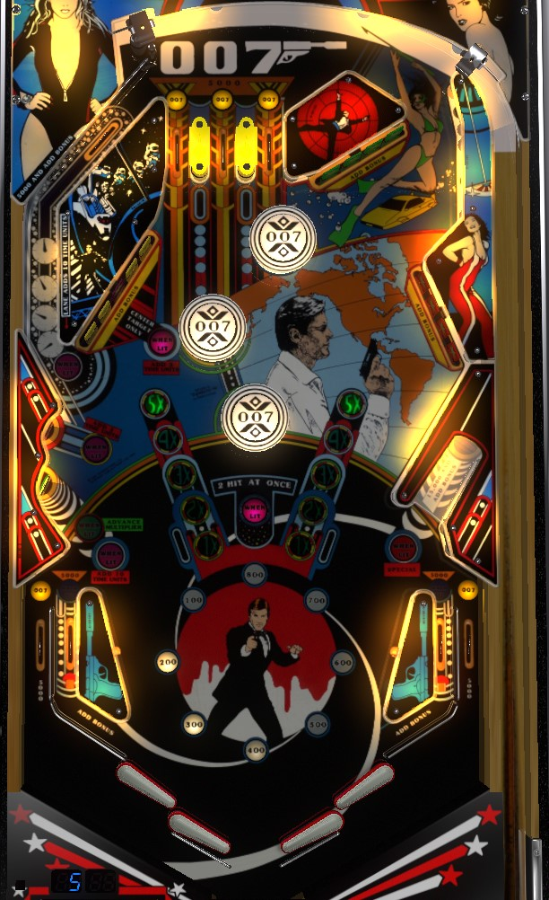

Not to be confused with any of the James Bond games released by Stern Pinball in 2022.
This game has both a time-based ruleset and a ruleset with conventional 3 or 5 ball play. This guide focuses on the time-based ruleset, as that was the original version of the game.
Complete drop target banks or top lanes to add more time to the game as frequently as possible, though it's hard to consistently gain more time than you lose. When there are 30 or more seconds left, or after clearing the green drop targets in the upper right, the green lower left standup target will be lit to advance the bonus multiplier; advancing the bonus multiplier past 5x resets it to 1x and keeps the green standup lit for 10 seconds, which is the best way to recover time.
James Bond 007 is a time-based game. The game always starts with 50 "time units" on the clock. One "time unit" is almost exactly one seconds, so I'll call them seconds for the sake of brevity. The clock does not start until a drop target or one of the three yellow top lanes has been scored. If you drain the ball, your bonus is scored, you lose 5 time units, and play passes to the next player if they have time left. Not every player will have the same number of turns, though, because a player's game does not end until they drain the ball with 5 seconds or less remaining on the clock. You can never have more than 50 seconds on the clock at a time; the following game features add additional time to the clock.
Top lanes score 5,000 points when lit, or 500 when not lit. In/out lane scoring is tied to the top lanes; they score 5,000 points when lit, or 500 when not lit, and the out lanes will be lit, but the in lanes are not. Collecting the center top lane will unlight the left out lane and light the right in lane; collecting either the left or right top lanes will unlight the right out lane and light the left in lane. If the top lanes are completed and reset, both in lanes will unlight, and both out lanes will relight.
The first drop target in the game scores 100 points. Each drop target scores 100 more than the previous, up to a maximum of 800 points. Collecting an 800-point drop target resets the drop target value to 100, but increases the bonus multiplier by 1x. Any drop target down also scores a bonus advance. Hitting 2 adjacent drop targets at the same time scores 10,000 points.
The upper left lane that goes behind the yellow drop targets always scores 5,000 points and a bonus advance.
Pop bumpers always score 100 points.
The left standup targets seem to always score 500 points.
Whether lit or not, the lower right standup target scores 15,000 points and a bonus advance.
James Bond 007 has a conventional in/out lane setup, but the widebody nature of this machine means there is room for 2 flippers on each side of the table bottom. It is possible to lose a ball in between the two flippers on a given side. In lanes score 500 points and a bonus advance when not lit, or 5,000 and an advance when lit; out lanes score 500 points or 5,000 when lit. See the first paragraph of Scoring features above to see how the in/out lanes are tied to the top lanes.
Bonus is advanced by any drop target, the upper left lane, lower right standup target, and any in lane. A mini-display on the backglass reading Bonus Value indicates the number of advances scored: your actual end of ball bonus is 1,000 points times the Bonus Value times the multiplier. Bonus multiplier is advanced with every 8th drop target or by hitting the green lower left standup target when lit. Max bonus is 5x 99,000 = 495,000 points. Advancing the bonus multiplier past 5x will reset it to 1x and light the lower left green standup target for additional time. Bonus multiplier is always carried from ball to ball, but base bonus never is.